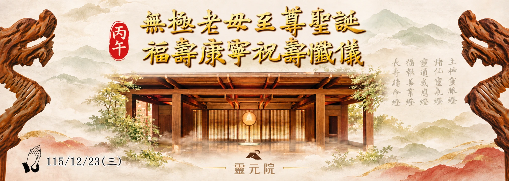
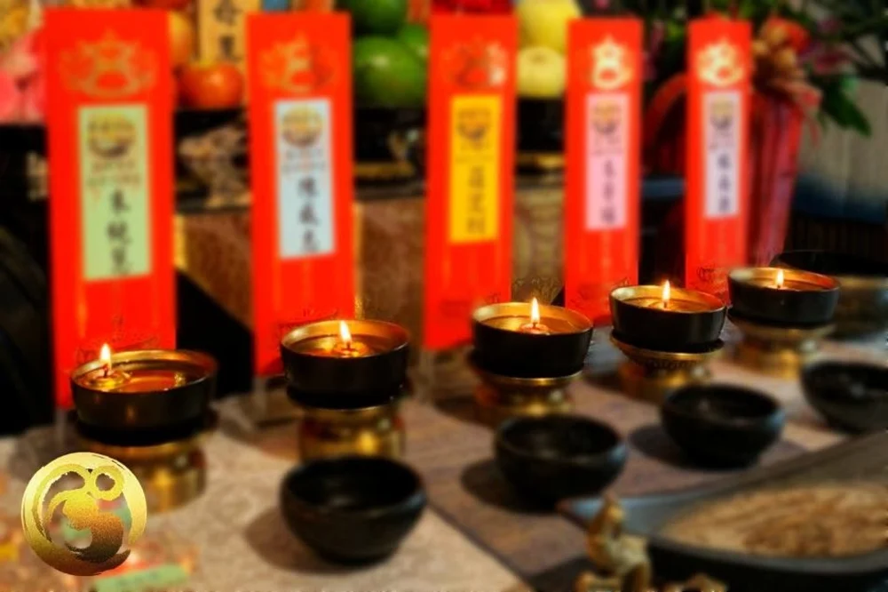
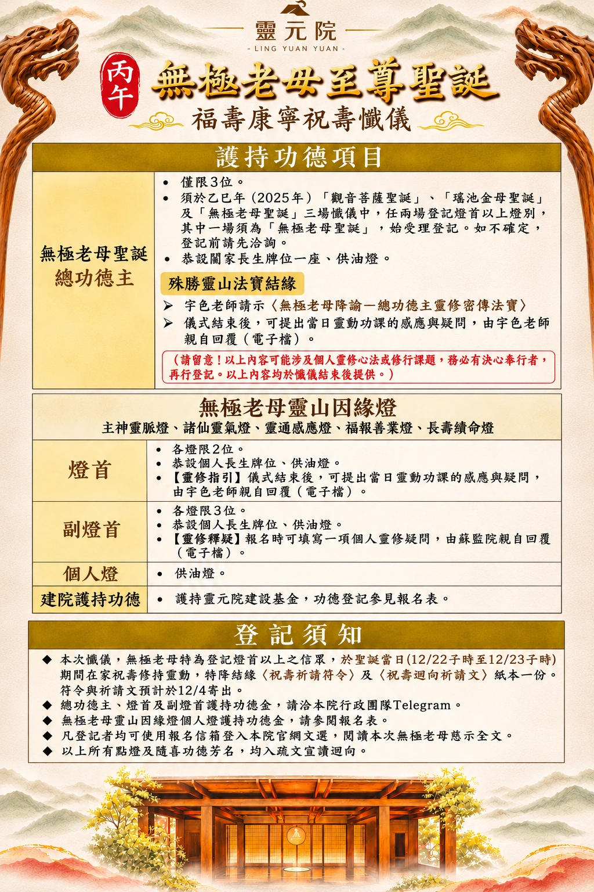
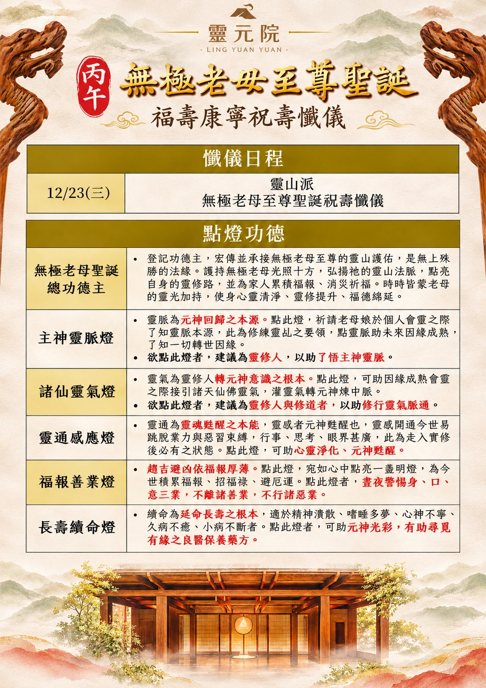

總功德主及燈首
- 專屬祈請符令及祈請迴向文。
- 在家設壇，恭迎無極老母聖駕臨壇加持。
- 祈請靈氣加持，進行靈動及省懺功課。
- 祝壽後可提出當日靈動感應與疑問，由宇色老師親自以電子檔回覆。

REGISTRATION DEADLINE
115/12/3（四）23:59
總功德主、燈首報名截止
115/12/21（一）23:59
本次懺儀報名截止
115/12/23（三）
舉行【無極老母聖誕祝壽懺儀】
福壽康寧祝壽懺儀
恭迎無極聖駕・龍鳳兒歲末省修承母恩
靈元院閉院已近三載。這段歲月，道場法務雖暫歇，無極老母對龍鳳兒的慈悲觀照，卻未曾止息。
丙午年無極老母慈示，此次聖誕祝壽具有不同於往年的殊勝意義。
無極老母將於聖誕良辰，親臨鑒察有心修行的龍鳳兒，觀照眾人在道場暫歇的日子裡，是否仍能持守初心、勤修功課，並將所學落實於日常生活。
此次祝壽，亦是難得的歲末靈修省察因緣。透過在家設壇、恭迎聖駕、靈動修持與誠心迴向，祈請老母娘靈氣降臨加持，慈悲指引個人修行方向。
無極老母至尊慈示 · 靈修人的歲末省修
靈元院閉院近三載，許多龍鳳兒始終盼望新道場早日落成，能夠再次親近神尊，與同修相聚。
丙午年聖誕前夕，宇色老師恭請無極老母慈示，老母娘特別提醒龍鳳兒：
「每個人的家，皆可成為自己的道場。」
當我們期待共同的修行歸屬，也值得省察：道場暫歇的日子裡，是否仍持守初心、勤修功課，並將所學落實於日常生活？
今年聖誕仍採在家遠距祝壽，邀請有心修行的龍鳳兒，在家恭迎聖駕、誠心祝壽，藉此因緣省懺修心，盼望日後再聚道場。
閱讀無極老母慈示與本次懺儀公開慈示與祝壽緣起可直接閱讀；完整懺儀內容須完成登記及核帳確認後，依規定登入閱讀。
宇色老師恭請無極老母降諭，賜予〈總功德主靈修密傳法寶〉。
報名時可提出一項個人靈修疑問，由蘇監院親自以電子檔回覆。
國曆115年12月23日 (農曆丙午年十一月十五日)
自12月22日晚上11時起，至12月23日晚上11時前。
建議於12月23日上午進行。
本院預定自12月4日起，寄發總功德主及燈首專屬祈請符令與祈請迴向文。
願諸龍鳳兒珍惜此次殊勝因緣，虔心恭迎無極老母至尊聖駕，於聖恩觀照之下，省察修心，再續靈程。
恭祈無極老母慈悲鑒納，靈光普照，福壽康寧。



請依序填寫資料。總功德主、燈首及副燈首功德金，請洽本院行政團隊。
依靈元院太歲燈報名後台欄位設置；目前為私人草稿展示，未連接真實報名資料。
可依登記編號、姓名或燈別搜尋及篩選。本頁僅顯示本次開啟期間的模擬資料，沒有讀取 Google 正式名冊。
| 登記編號 | 登記人 | 燈別 | 金額 | 狀態 | 操作 |
|---|---|---|---|---|---|
| 目前沒有模擬登記資料 | |||||
與太歲燈相同，可在此試算各燈別功德金；未核定欄位保留空白。設定僅套用至本次瀏覽，不影響正式報名。
總功德主限 3 位、各燈首限 2 位，115/12/03 23:59 截止；副燈首各限 3 位、個人燈不限名額，115/12/21 23:59 截止，額滿或期限先到即停止。下方僅模擬已使用名額。
可在本頁暫時調整法會說明與結緣事項。Banner 下方的重複標題文字已依需求移除。重新整理後還原。
已使用本次法會正式 Banner。選取新圖可即時預覽，重新整理後還原。
官方 Banner 與圖文說明的原始圖片均保留在網站內。
欄位規劃與太歲燈相同；本次無極老母私人草稿尚未對接專屬 Apps Script，避免誤寫入正式名冊。
| Apps Script 報名寫入 | 尚未開放（私人草稿） |
|---|---|
| Google 管理者登入 | 尚未連接 |
| Email 驗證碼與確認信修改 | 尚未連接 |
| 雲端資料備份與版本紀錄 | 尚未建立 |
Google 報表位置待建立
| 欄位群組 | 需要同步的欄位 |
|---|---|
| 登記人 | 登記編號、姓名、Gmail、電話／Telegram |
| 總功德主 | 芳名、國曆／農曆、民國出生年月日、現居地址、2025年資格自述、符令寄送地址、名額 |
| 五大因緣燈 | 五大燈別，各燈首／副燈首／個人燈芳名、出生資料、現居地址、副燈首靈修釋疑、符令寄送地址、名額 |
| 建院隨喜 | 各項贊助芳名、固定功德金／隨喜金額、筆數 |
| 匯款與審核 | 可計算總額、待核定金額、匯款後五碼、備註附言、感謝狀、備註、審核狀態、修改時間、報名注意事項同意 |